2015/11/22~23 長野リンゴオフ
恒例のリンゴオフの季節になりました。
今回も美味しいリンゴを求めて長野まで長距離オフです。
今回は、リンゴ狩りと同時に瀕死の状態から復活した３台の復活祭も開催されることに！
後に紹介するが、復活した３台とは幹事のともパパ号、めたぼー号。Mゴロー号だ。
Mゴロー号はこの前日にエンジンフルO/Hから仕上がってきた。果たして無事に長距離をこなせるのだろうか・・・
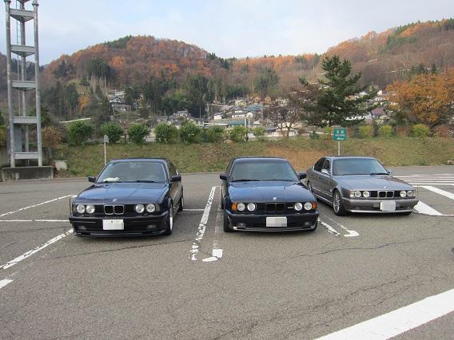
長野のとあるSAに集合した関西組
予定時刻より２時間早く到着・・・ TINAさんは夜中に走って車中泊だった！
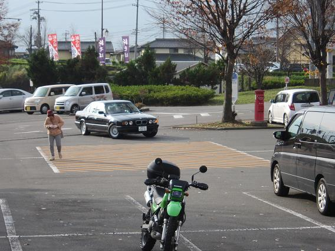
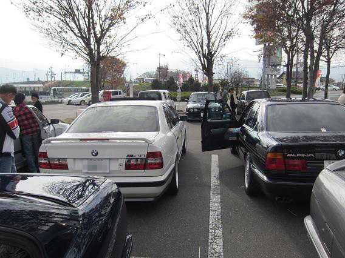
良い時間になってきたので集合地点の おぎのや長野店 に移動です！
どんどんE34が集まってきます！
左の写真はともパパ号の登場シーンだが、E34は少し離れたこの角度がとても綺麗に見える。
タイヤが左に切れているのも高得点だ！（バカ
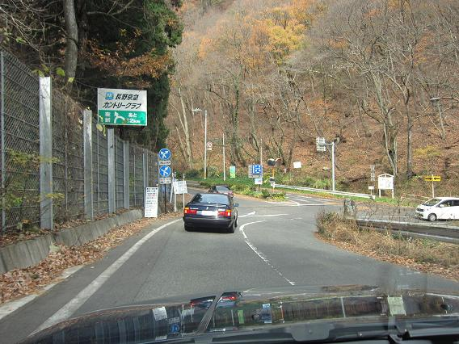
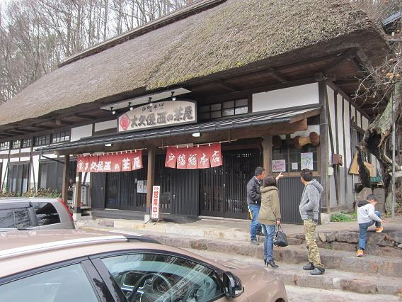
全員揃ったら信州名物 戸隠そばのお店までドライブです。
紅葉と白樺が綺麗でとても良いドライブコースだ。
なかなかの人気店のようで、予約がなければ大人数が入るのは難しかっただろう。
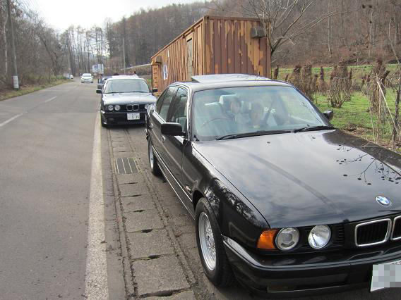
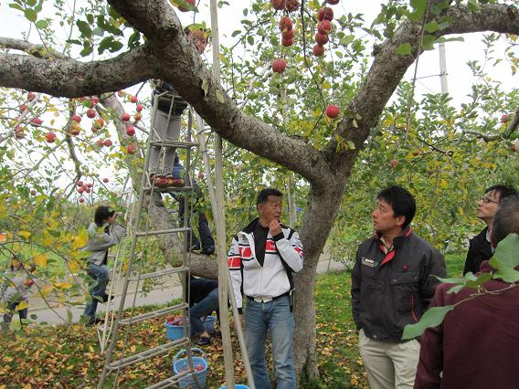
途中、後発組を待ちながら・・・ 紅葉のドライブコースを抜け・・・ ともパパ農園へ！
今年も立派なリンゴがたくさん！ 今年は冷えが足らず蜜が少ないとのことだったが、今年もとても美味だ！
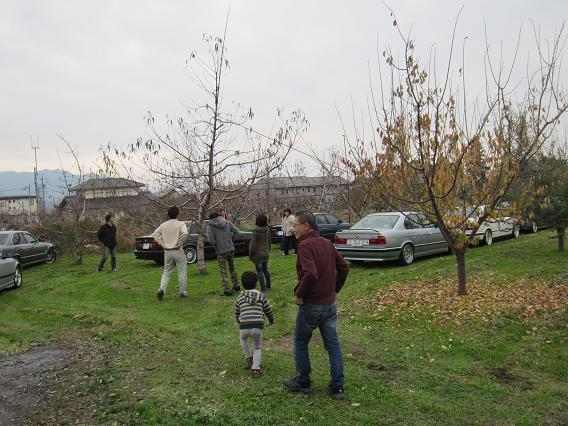
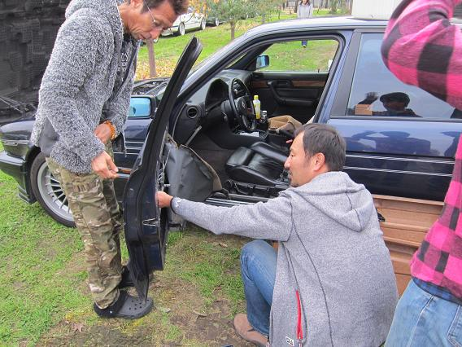
リンゴを狩ったらともパパ邸へ移動です。 １０台停めてもまだまだ余裕です（汗
ここで急遽ジャーク号のドアロックの修理を！
運転席だけロックがかからないようだ。
ともパパ邸にある部品取り号から小物をいただいて修理を試みるも・・・
キャッチャーの固着で修理できずm(_~_)m
暖かくなったらメンテオフで直しましょう！
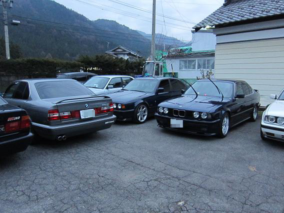
日も暮れてきたので、タケさんが予約して下さった宿まで移動です。
ともパパ邸から１０分くらいの湯田中温泉だ。
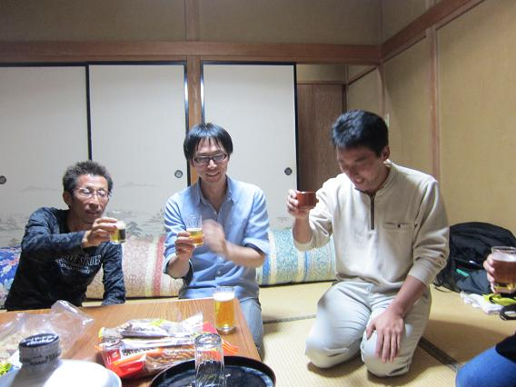
「これからも頑張って３４を維持していきましょう！」ってことで・・・！
幹事のともパパさんより乾杯の挨拶です＾＾！
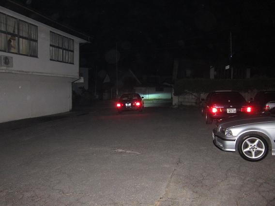
楽しい時間はあっという間です。どーでもいい話をして気が付けば深夜に！
夜も更けてきたので、ともパパさんは奥さんの迎えで帰宅です。
デフロックを効かせながらパワードリフトで出て行く奥さんの運転にみんな爆笑！
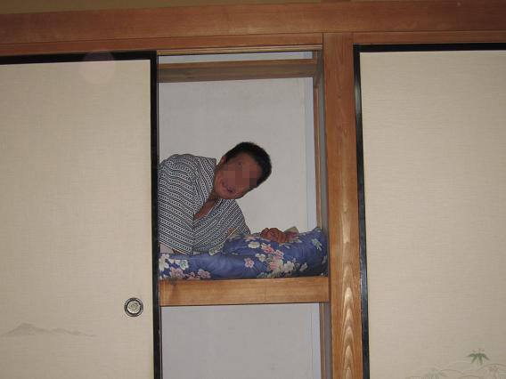
そろそろお開きにしますか・・・ って頃に押入れで寝ていたTINAさん復活＾＾！
宴会は続き・・・
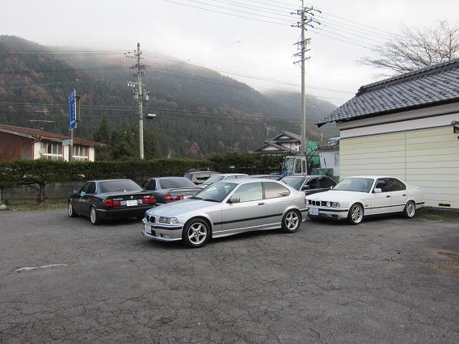
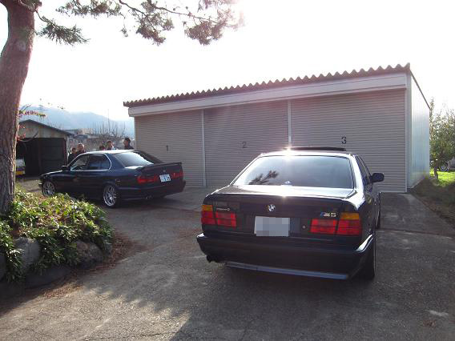
寝た！ と思ったらもう朝です（笑
ともパパ邸に寄って関西組は帰路へ！ ５００キロの道程を帰ります。
一緒に帰ってきたＴＩＮＡ号の速いこと・・・（汗
やっぱり超高速域ではビルシュタインなんだろうか・・・
今回復活を果たした３台を紹介しておこう！
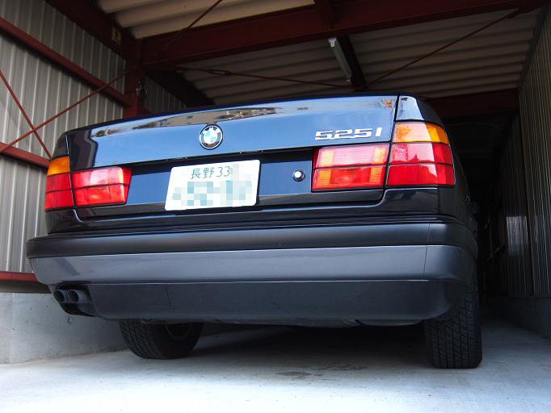
ともパパ号
病名：シリンダーヘッドガスケット抜け
治療法：部品取り号よりエンジン＋AT（O/H済み）載せ換え
普通のオーナーなら修理は諦めるだろう・・・
ちょうど部品取り号を持っていたことと、そのエンジンが極上だった為復活できたそうだ。
やはり部品取り号があると何かあっても安心だ。
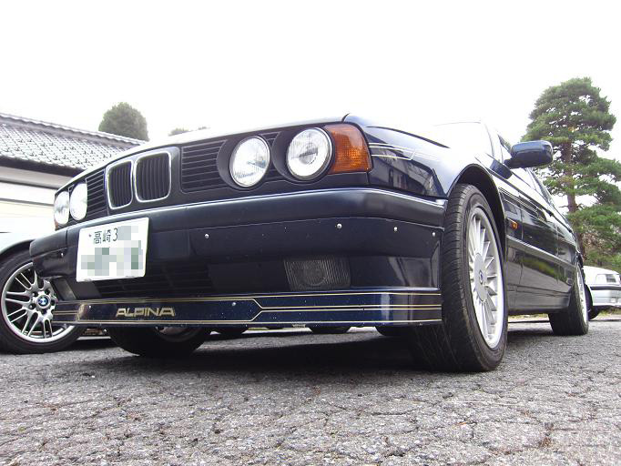
めたぼー号
病名：AT不良
治療法：AT＋トランスファー載せ変え
１年前にATの異常で埼玉県にあるアルピナ専門店で「ATをリビルト品」に交換！
しかし・・・
すぐに壊れ再度埼玉県にあるアルピナ専門店に駆け込むも責任逃れの説明を繰り替えされ・・・
挙句の果てに「載せたATは中古だから」と言われたそうだ。
結局は解決せず、レッカーで引き取りに行きディーラーに修理に出したそうだ。
次はディーラーで本物の（笑）リビルトATに交換するも、まだキャリブレーションが完璧ではなく、一時退院で今回のオフに参加となった。
4駆なのでATの調達にも一苦労のようだ。
愛情がなければ１台の車にここまで手間は掛けれないだろう。 そしていつの間にかナローグリルに変更されている！
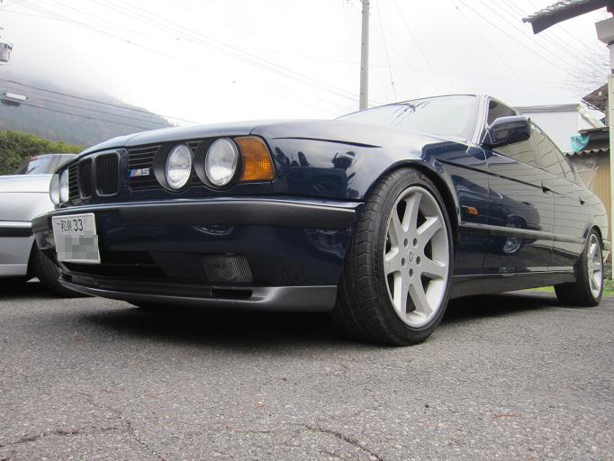
Mゴロー号
病名：シリンダーブロック不良
治療法：エンジンフルO/H
詳細はまたメインテナンスにUPする予定だ。
E32 ７３５iから摘出したエンジンの部品を使って各部バランスを取り、WPC加工を施してO/Hした。
現在まだ慣らし中
今回も思い出に残る楽しいオフミだった。
ともパパさんの細かい気配りと完璧なタイムスケジュールには驚いた。
参加車両１０台をまとめるのはとても大変だったと思う。
他にもタケさんに宿の手配をしていただいた。ありがとうございました。